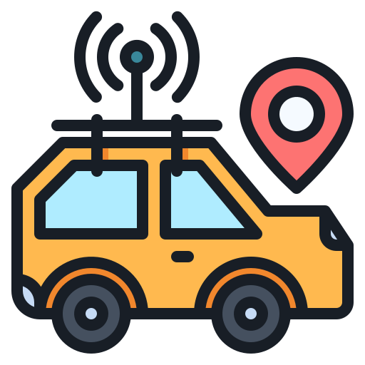
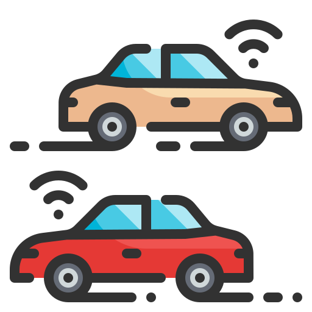
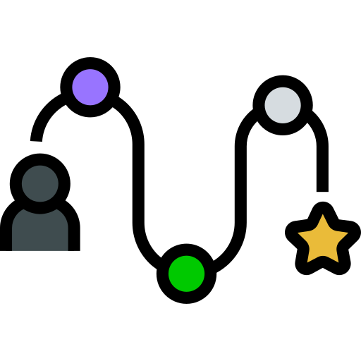
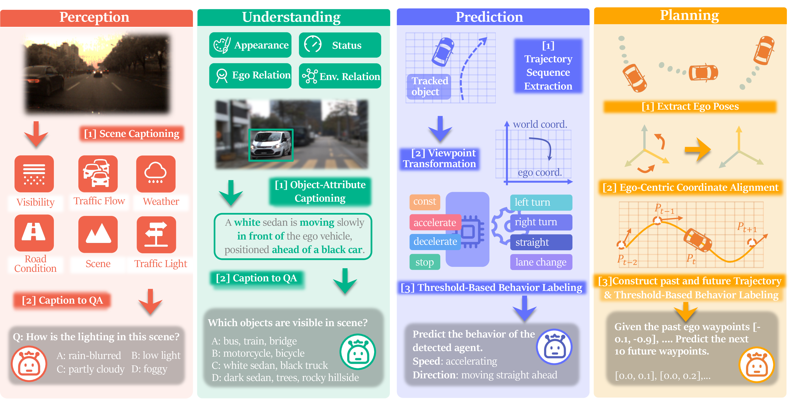
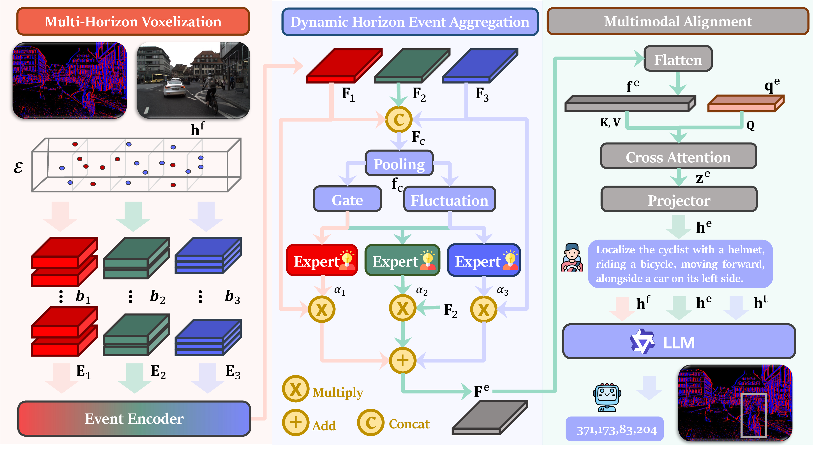
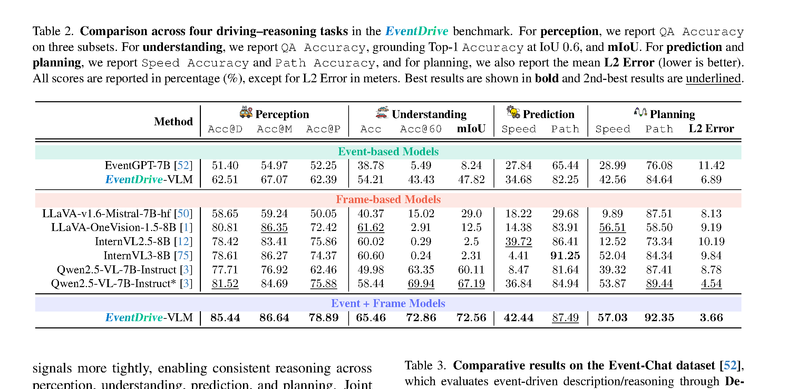
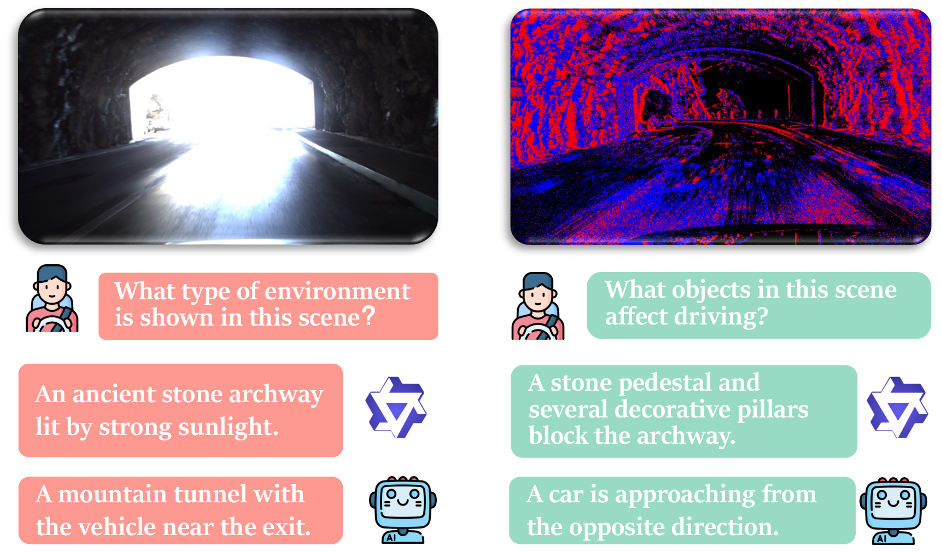
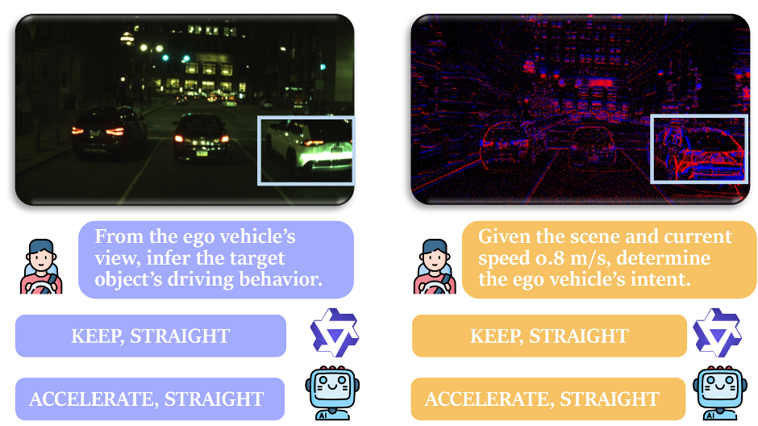

Full-stack benchmark
Language-grounded tasks connect perception, object understanding, motion prediction, and ego planning.
CVPR 2026
Event Cameras for Vision-Language Driving Intelligence
1NUS 2HKUST(GZ) 3CNRS@CREATE
4Horizon Robotics 5A*STAR, I2R
6IPAL, CNRS IRL 2955, Singapore 7University Toulouse, CNRS, CerCo
8ETIS, CY Cergy Paris University, ENSEA, CNRS
Overview
Event cameras record brightness changes with microsecond latency and high dynamic range. They preserve motion structure in low light, glare, and rapid motion, where conventional frames can become unreliable.
Language-grounded tasks connect perception, object understanding, motion prediction, and ego planning.
Synchronized event streams and RGB frames are paired with structured supervision from three driving datasets.
EventDrive-VLM combines high-frequency motion cues with frame semantics inside one multimodal model.
Benchmark
Each stage probes a distinct role for temporal cues, from robust environmental perception to motion-aware planning.

01Scene-level context under challenging illumination and motion.

02Object-centric semantics, relationships, and grounding.
Short-horizon behavioral forecasting for surrounding agents.

04Ego-centric intent estimation and future waypoint generation.
Dataset
EventDrive builds structured supervision from DSEC, M3ED, and PKU-DAVIS-SOD, combining events with frames, boxes, LiDAR, and ego poses.

Frames are captioned and converted into QA pairs covering visibility, traffic flow, weather, road conditions, scene type, and traffic lights.
Ground-truth boxes guide attribute captions, structured QA, and spatial grounding for object appearance, status, and relationships.
Tracked trajectories are transformed into the ego frame and discretized into speed and direction intents for surrounding agents.
Ego poses define speed intent, direction intent, and future waypoints, forming decision-oriented planning queries.
Hard Split
The hard split contains low-light and motion-blur sequences, enabling targeted evaluation of event sensing under adverse conditions.
Model
A dynamic event pathway captures temporal structure at multiple horizons, then aligns motion-aware event tokens with frame and language representations.

Short-, medium-, and long-horizon tensors preserve motion patterns across temporal scales.
A mixture-of-experts gate emphasizes the most informative temporal horizon for each scene.
Learnable queries extract compact motion-aware tokens for coherent multimodal reasoning.
Results
Event-frame fusion improves reasoning across the driving chain, particularly for grounding, motion prediction, and planning.

Event-frame fusion is strongest overall. It leads most metrics across perception, understanding, prediction, and planning.
Events add motion awareness. High-frequency temporal cues improve speed reasoning and stabilize waypoint prediction.
Frames and events are complementary. RGB contributes semantics, while events remain informative under blur and difficult illumination.
Qualitative Comparison
Frames preserve appearance semantics, while events reveal temporal gradients and motion structure. EventDrive-VLM fuses both signals for more robust scene understanding and ego decisions.


Citation
The dataset and toolkit are available on Hugging Face. Please cite EventDrive when using the benchmark in your research.
Dataset & Toolkit@InProceedings{Lu_2026_CVPR,
author = {Lu, Dongyue and Li, Rong and Liang, Ao and Kong, Lingdong and Yin, Wei and Ng, Lai Xing and Cottereau, Benoit R. and Chane, Camille Simon and Ooi, Wei Tsang},
title = {EventDrive: Event Cameras for Vision-Language Driving Intelligence},
booktitle = {Proceedings of the IEEE/CVF Conference on Computer Vision and Pattern Recognition (CVPR)},
year = {2026},
}